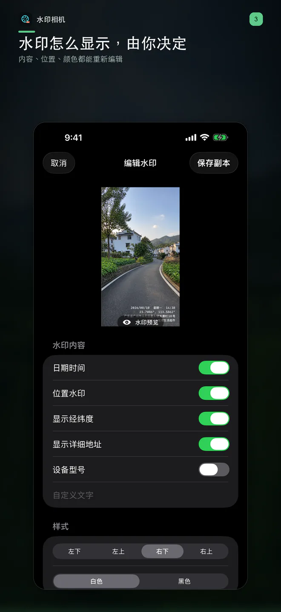
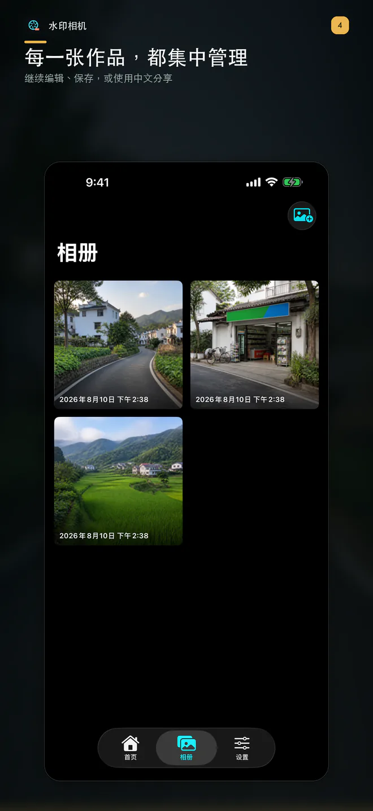
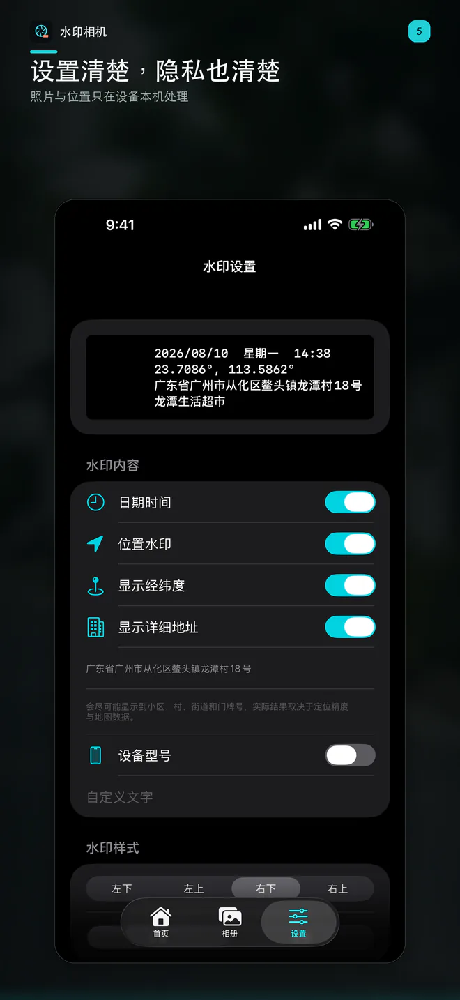

当前版本 v1.0.1 · iPhone & iPad · iOS / iPadOS 17.0+
当前版本 v1.0.1 · iPhone & iPad · iOS / iPadOS 17.0+ 拍照加水印
拍照、长按录制带声音的视频，或从相册导入照片和视频，一键添加时间、经纬度、详细地址、地点和自定义文字。作品可继续修改水印，并直接更新当前版本，减少重复文件。

拍照与录像
短按拍照，长按录制带声音的视频；也可从系统相册导入照片或视频。
水印信息更完整
可显示日期、时间、星期、经纬度、详细地址、附近地点、设备型号和自定义文字。
直接更新作品
修改水印后更新当前照片或视频，不再反复生成重复作品；本地保留原始素材，便于继续调整。
照片视频统一管理
本地作品页支持预览、播放、编辑、分享、删除和保存到系统相册。
位置由你决定
仅在你允许后生成位置水印；地址精度取决于设备定位、权限和 Apple 地图数据。
免费使用
无需注册，没有订阅或付费内购。免费版本含 Google AdMob 广告，并通过 Google UMP 管理适用地区的广告隐私选择。
记录说明：本 App 用于记录与整理，不提供防篡改、电子签名或法律认证服务。
APP PREVIEW
真实界面展示
以下为 App 界面预览，展示拍摄、水印编辑、作品管理与设置；照片和视频功能以最新版本为准。


